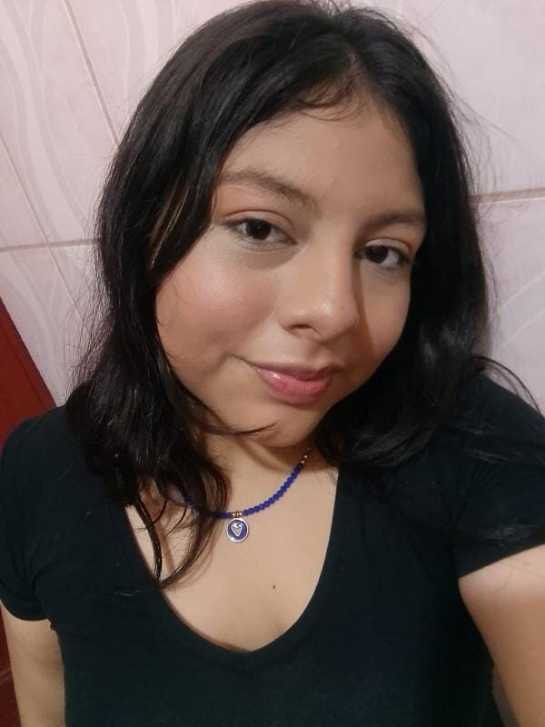
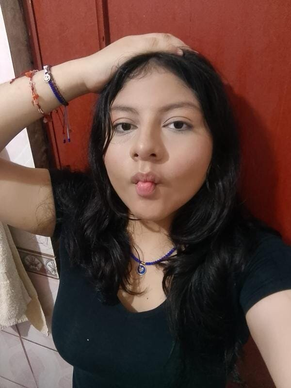
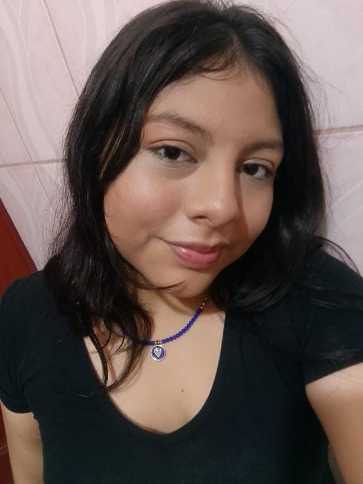
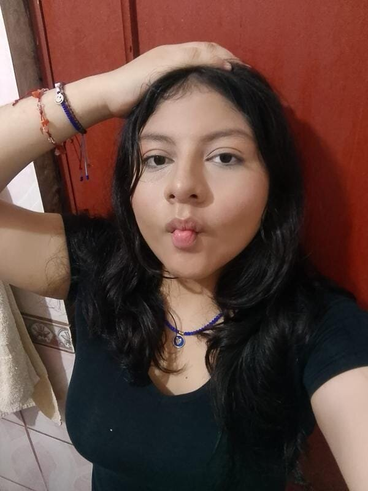

Bueno, empezaré esto diciendo lo mucho que te quiero.
bueno en este dia tan especial para ti quiero recordarte que sin importar el tiempo que pase,la edad que tengas o la distancia,tu siempre seras mi niña consentida,mi mejor amiga la persona que mas quiero en este mundo
Esta pequeña pagina web que hice es para que siempre tengas un recordatorio que sin importar el tiempo,la distancio,o lo que pase,tu siempre vas a ser mi biankita,mi tesorito,mi gordita bella,mi shiquita especial,mi niña hermosa,siempre vas a ser mi mejor amiga para toda la vida,y siempre pero siempre te voy a amar con todo mi corazoncito mi shiquita hermosa.
A todo esto solo te quiero agradecer por que tu eres una gran amiga,gracias por siempre estar para mi,por escucharme,por demostarme siempre tu cariño y amor.Y aunque no siempre hablemos tu siempre estas al pendiente de mi,creeme q siempre estoy pasando por un mal momento tu eres esa lucecita que ilumina mi oscuridad.
la verdad creeme que enserio eres una de las personas que mas admiro por que apesar de todo lo que has pasado eres una muy buena chica,cariñosa,atenta y amable creeme que admiro la forma en la que siempre afrontas las cosas,si bien muchas personas se han alejado de ti,eso no te ha cambiado y sabes tratar muy bien a las pocas personas que estan a tu lado,creeme que nunca me cansare de decirte lo orgulloso que estoy de ti,siempre te esfuerzas y das el 100 en todo lo que haces y creeme que enserio quiero verte triungar mi niña y poder verte graduada y decir "esa es mi mejor amiga,sabia que ella lo lograria,siempre lo logra" dejame decirte mana que te mereces lo mejor de este mundo,por que tu eres una personita que da todo de si.
Y aunque te lo dije solo una vez mana,te dire que tu eres una persona la cual es verdaderamente bella,ya que la belleza no es el fisico,si no las personas que se esfuerzan siempre por si mismo,son los mas bellos que existen,no importa si en tu camino se ha ido gente,ten en mente que siempre vas a tener personas las cuales nunca se alejaran de ti y se quedaran conitgo hasta que cumplas tus sueños (me incluyo),en resumen mi shiquita hermosa,siempre y cuando desmutres y sepas lo que quieres y quien eres tu siempre seras verdaderamente hermosa,al menos para mi cosa que nunca cambiara.
Desde que te conoci mi vida siempre ha ido mejorando ya que tengo el apoyo y cariño constante de una persona que siempre me va amar y animar en cualquier sincurstancia,gracias tu bella amistad mana espero que tu y yo podamos tener muchos años mas de amistad por que creeme que enserio quiero verte crecer,quiero ver como cumples tu sueños y como vas haciendo tu propio camino uno en el cual tu eres muy feliiii mana,cree que mientras yo exista siempre vas a tener alguien que te demuestre lo mucho que te ama y si necesitas palabras que te den animos o fuerzas siempre estare para ser super empalagoso contigo y demostarte que te amare por siempre y que sin importa el tiempo siempre me tendras apoyandote y amandote con todo mi ser.
sin importar la edad que tengas o el tiempo que haya pasado tu siempre seras mi mejor amiga,mi niña de ojos bontios,mi princesita,mi mano derecha,creeme q te amo mas de lo que puedo decir o expresar y esto es una muestra de lo mucho que te amo,con uno o dos meses de trabajo hice lo posible para que te encantara mi regalo y lo mas importante y especial de todo esto,es que esta pagina no se ira a ningun lado,estara aqui para toda la eternidad,esta pagina es como tipo una cartita en la cual digo lo mucho que te amo y aprecio,ya sea tanto a ti,como tu amistad,recuerda que tu eres capaz de todo y que si sientes que no puedes,siempre estare para tenderte una mano y podamos siempre avanzar juntos como mejores amigos te amu,mi niña bella <3.
Creeme que me hubiera gustado mucho poder estar en tu fiesta de cumple darte un abrazo y decirte lo mucho que te amo y te he extrañado todo este tiempo que no hemos podido vernos,pero bueno supongo que pa la proxima podremos vernos,hasta ese entonces siempre me tendras por chat mandandote testamentos diciendo lo mucho que te amo,aprecio y quiero, y siempre que sea tu mejor amigo.Tu siempre vas a tener este tipo de pequeños detallitos para que recuerdes siempre lo especial que eres para mi
y pues antes de terminar todo este regalito queria decirte que tu eres una gran amiga,espero y siempre podamos ser mejores amigos,ya que al igual que a cierta persona desde hace mucho tiempo yo... Decidi que darme a tu lado para siempre por que,tu eres una personita que lo vale y enserio quiero verte triunfar y conseguir tus logros,creeme que tu eres una exceltente amiga,un amor de persona y de niña,eres cariñosa amable y detallista,recuerda que siempre te voy a querer y estare para ti en los buenos momentos,en los malos y en las locuras,siempre sere tu mejor amigo y sere feliz a tu lado,por que quiero verte feliz y sonreir siempre,mientras tu siempre tengas tu bella sonrisa,yo estare feliz.
Te amo mucho mi niña bella,te deseo un muy feliz cumpleaños y que la pases super bonito,se que esto esta un poco simple pero creeme que hice todo a mano y si vieras la de codigos que tiene todo esto,bueno cualquier cosa espero y te guste mi detallito,te amo mucho,demasiado,gracias por ser la mejor amiga que siempre esta para mi y nunca se va de mi lado,se que tu eres capaz de todo si te lo propones,nunca dudes de ti,ya que tu eres alguien muy hermosa,bella,carismatica y super inteligente,eres un preciosura y eres una de las personas mas inteligentes que conozco no cambies nunca mana,yo te amo tal y como eres sip,bueno espero y te guste esto muuuack un besote para mi chiquita hermosa,que aunque sea mayor que yo,soy mas alto sjjaksja,weno te amo feliiiz cumpleee.
UNA MINI HISTORIA DE NUESTRA AMISTAD
Weno la vrd que cuando te conoci,no senti que me hiba a llevar super bien contigo o asi,senti que pues simplemente serias alguien mas del monton,pero cuando yo te empeze a conocer mas me di cuenta de tu personalidad de que eres una personita muy amable y con mucho amor para dar,luego de eso admito que no nos llevabamos super que super bien literalmente hablabamos de rara vez y una vez nos alejamos,pero tu hacias todo lo posible para captar mi atencion y tratar de arreglar las cosas,luego de eso habalamos y solucionamos todo.
Una vez que paso eso hablamos y poco a poco nos empezamos a tenr cariño,luego nos hicimos mejores amigos y tuviste que soportar los desvarios mentales de este personaje,pero apesar de que mi comportamiento era erratico,tu decidiste quedarte a mi lado y quererme apesar de todo y gracias todo tu apoyo incondicional y cariño cambie,por que no queria hacerte daño haci que pues aunque duro menos de lo que pense deje muchas conductas,digamos malas por q no queria lastimarte.
luego recuerdo q tuviste una mala experiencia y no estabas del todo bien por algo que recibiste y en ese momento fue cuando decidi alegrarte y sacarte una sonrisa,apesar de q yo no estaba del todo bien preferi esucharte y animarte,cosa la cual logre y desde momento digamos que anque ya lo era,fui mucho mas empalagoso y cariñoso contigo,por que queria y quiero verte tu preciosa carita sonriendo
A todo esto llegamos a la actualidad,tuvimos altas y bajas,pero siempre nos mantuvimos juntos,creeme que enserio conocerte y haber pasado por muchas cosas juntos fue una de las mejores cosas que me pasaron en l mundo,eres mi apoyo emocional y mi curita para el corazon desde el instante en q nos conocimos mejor,eres un amor de persona que apesar de todo lo q ha pasado,sigues adelane y yo siempre estare aqui para apoyarte y si lo necesitas darte una mano para seguir adelante,pero ten en cuenta que sin importar lo que,el obstaculo o algo,lo vamos a superar juntos,por que soy tu mejor amigo y yo decido quedarme contigo para siempre.
 


